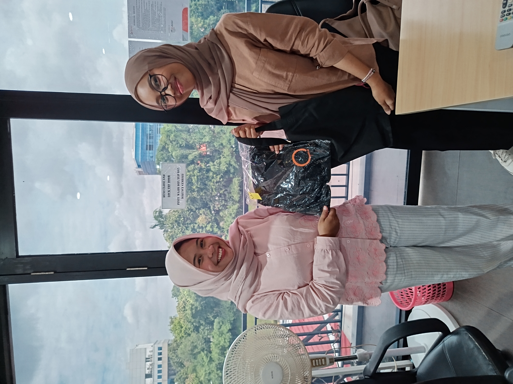

JuTeKJurnal Teknologi Karyawan - Edisi [November 2025] |
||||||||||||||||||||
|
Halo, Rekan-rekan! Selamat datang kembali di JuTeK (Jurnal Teknologi Karyawan)! Ini adalah wadah kita untuk saling berbagi wawasan, penemuan, dan pengalaman di dunia teknologi. Di edisi kali ini, kita punya lima rangkuman keren dari rekan-rekan kita. Topiknya beragam, mulai dari eksplorasi AI Google, pengalaman dengan Supabase, tips produktivitas UI, hingga seluk-beluk Virtual Machine. Selamat membaca! |
||||||||||||||||||||
|
||||||||||||||||||||
📸 Momen JuTeK: Apresiasi Kontributor!

Kami ingin memberikan apresiasi sebesar-besarnya kepada para rekan yang telah berkontribusi. Dalam foto, kontributor kami, Cindy Aulia (kiri), terlihat bersama Nashalu Aprilianti (kanan) dengan merchandise eksklusif JuTeK. Terima kasih telah meluangkan waktu untuk berbagi wawasan dan ilmu! |
||||||||||||||||||||
Kamu Mau Berkontribusi?Punya ide, tips, case study, atau ulasan teknologi yang ingin kamu bagikan? Kirimkan draf tulisanmu! Kirim Tulisanmu |
||||||||||||||||||||
|
Salam, Tim Redaksi JuTeK |